OUM |
Technique Overview |
||
Method Navigation |
Current Page Navigation |
||
|
|
||||||||
The purpose of this technique is to provide meta data descriptions for various IT assets that an enterprise may need to track using some form of Enterprise Repository. In enterprise frameworks, such as TOGAF, the set of information that is stored in an Enterprise Repository is also known as the “enterprise continuum".
Among other things like policies, standards and guidelines, an Enterprise Repository is one of the tools that supports IT Governance (at various levels). An Enterprise Repository should support the IT governance policies that have been identified for the enterprise.
In its simplest form an “Enterprise Repository” can consist of one or more spreadsheets. However in practice enterprises that start out this way, as a result of progressive insight tend to extend the requirements for the repository, and soon spreadsheets prove to be inadequate to support these. Among other issues, spreadsheets do not properly support linkage of IT assets of different type, are not well suited for dependency tracking, are not multi-user, and do not support IT asset lifecycle management.
The requirements you may have for an Enterprise Repository may include support for the following:
The type of IT assets that are captured using an Enterprise Repository should be course-grained enough to be meaningful at an enterprise-level, and feasible to maintain. Therefore, for example, individual application code files should not be tracked using an Enterprise Repository. The types of IT assets that are tracked typically include (but are not limited to):
The following provides meta data descriptions for most of the above. Use these descriptions as a starting point whenever you have to configure an Enterprise Repository and are including these asset types.
Meta Models - The result of applying this technique is a set of meta data descriptions for various types of IT assets, that together provide a consistent overall model, and that is configurable and extendable, supporting changing requirements over time.
No. |
Step | Component | Component Description |
|---|---|---|---|
1 |
Gather common taxonomies. | ||
2 |
Determine meta data description. | ||
3 |
Configure repository to support meta model. | ||
4 |
Implement access policies for the meta model. |
Assets can be categorized in multiple fashions. Agreeing upon categorizations used for all asset types between the different stakeholders in the enterprise will ease collaboration. These categorizations or taxonomies are useful to search for assets and to avoid duplication of assets in the same context. All assets therefore need to be categorized against all the agreed common taxonomies. This supports asset portfolio management in discovering existing assets and organizing new ones.
The set of taxonomies varies depending on the enterprise. Consider the taxonomies described in the following as a baseline.
For recording the relationship between the business and IT assets and initiatives, a business-related taxonomy is essential. The taxonomy should comply with the enterprise functional decomposition approach. This can be achieved by using the Enterprise Function Model as the basis to build a common business related taxonomy. Refer to the Functional or Process Modeling technique for more details.
Some enterprises are using standard industry models. For example, in telecommunication, enhanced Telecom Operations Map (eTOM) provides a predefined business process framework, that can be used to build a business taxonomy in the repository.
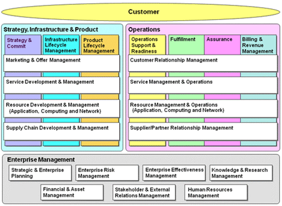
Organizing assets with the same taxonomy supports early discovery of assets for reuse and allows business strategy to identify improvement points in the overall asset portfolio to better support the business roadmap. For that purpose, the hierarchical structure of the business Function Model should be translated into a taxonomy representing a hierarchical folder structure within the Enterprise Repository.
If there is a major IT program affecting most areas of IT, then its target architecture, or alternatively the target enterprise architecture could be used as a basis for a taxonomy. This allows assets to be classified based on their technical rather than business position in the enterprise. This also assists in measuring the progress towards the target architecture. This is also a taxonomy that resonates well with IT people and allows not only to find reuse in their areas but also gives a sense of what other areas of the enterprise might be doing to solve similar technical problems.
For SOA, an example taxonomy for target architecture is described in the Service Architecture technique.
You should determine meta data descriptions for all the enterprise assets that should be included in the Enterprise Repository. Below is a list of asset types, with suggested meta data descriptions, including the asset lifecycle, taxonomy and properties, and relationships to other assets.
An Enterprise Repository is used as a tool to enforce governance. The challenge is to stay pragmatic regarding the number of asset types and properties per asset to be maintained. The more assets and the more details about these assets that are in the repository, the easier they are to govern, but the bigger the cost to produce and maintain the meta data. Therefore, it is best to limit the assets managed in the repository to the minimum required for effective governance, unless the metadata can be produced automatically, for example, from a deployment or monitoring tool. The Enterprise Repository does not usually replace specialized repositories, such as, source control systems. Instead it adds additional metadata needed for collaboration across projects and domains.
For more details about using the Enterprise Repository in the context of a SOA initiative, review the SOA Service Lifecycle technique.
Currently, there is guidance for the following types of IT assets:
The following describes the meta data description for programs.
The following picture shows how a program lifecycle could look.
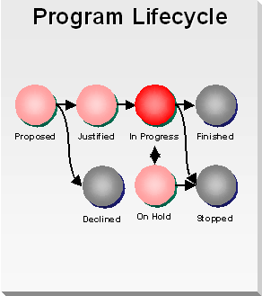
The statuses have the following meaning:
The following are the recommended properties that should be captured for programs:
Property |
Description |
|---|---|
Name (*) |
The unique name of the program. |
Purpose (*) |
A brief description of the purpose of the program. |
Planned Start Date |
The date on which the program is planned to start. |
Start Date |
The date on which the program has started. |
Planned End Date |
The date on which the program is planned to end. |
End Date |
The date on which the program has ended. |
Budget |
This indicates the total budget that has been assigned to the program. |
(*) Indicates mandatory properties. Other properties may become mandatory depending on the status.
Asset Type |
Relationship |
Description |
|---|---|---|
Requirement |
addresses |
A program addresses requirements. |
Project |
consists of |
A program consists of one or more projects. |
Stakeholder |
has a Business Sponsor |
A program has a business sponsor. |
Stakeholder |
owned by |
A program is owned by a stakeholder. |
The intention of this asset is not to use the repository for project management but to create collaboration between project management and portfolio management.
Where SOA is used strategically, it is possible that several projects running in parallel might have an interest in the same SOA service. Therefore, the project at least needs to provide the planning information with respect to SOA release management. The project will be used along the service lifecycle. Refer to the SOA Service Lifecycle technique, Define the Service Lifecycle, for more details on the use of projects in a SOA context.
The following describes the meta data description for projects.
The following picture shows how a project lifecycle could look. Depending on the type of project, there will be a finer-grained status model for projects that are In Progress. For example, Implement projects typically recognize the phases of Inception, Elaboration, Construction, and Transition, while you often would like to indicate multiple states within the Construction phase to indicate when integration testing may start.
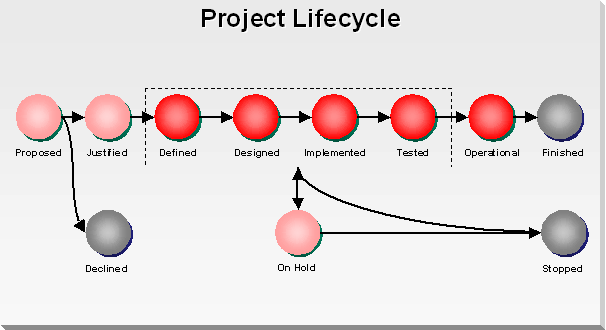
The statuses have the following meaning:
The following are the recommended properties that should be captured for projects:
Property |
Description |
|---|---|
Name (*) |
The unique name of the program. |
Goal (*) |
A brief description of the goal of the project. |
Scope |
The scope of a project defines the relevant area within the enterprise for which the project is applicable. Valid values include:
|
Description |
The description should clearly explain what the project is about, and add to the goal. |
Business Category |
Select the folder path to which the project belongs with respect to the common business taxonomy (see Gather Common Taxonomies). |
Enterprise Priority Score |
The enterprise business priority score indicates the priority for the project measured at the enterprise level. This score is used to determine release-planning biases when determining contingency plans if resource constraints are encountered. A higher score value indicates a lower enterprise priority (for example, Priority 1 is the highest). |
Priority Justification |
Select Brief notes on how the Enterprise Priority Score was determined for the project. folder path to which the project belongs with respect to the common business taxonomy (see Gather Common Taxonomies). |
Priority Score Date |
The date on which the Enterprise Priority Score was determined. |
Priority Score Contact |
The person who has the main responsibility for the enterprise priority score. |
Status (*) |
The current state of the project within its lifecycle as defined in the Project Lifecycle above. The set of available statuses can be customized for a particular enterprise. |
Planned Start Date |
The date on which the project is planned to start. |
Start Date |
The date on which the project has started. |
Planned Defined Date |
The date on which the project is planned to finish Elaboration and reach status, Defined. |
Defined Date |
The date on which the project has reached Defined status. |
Planned Implemented Date |
The date on which the project is planned to finish implementation and reach status, Implemented. |
Implemented Date |
The date on which the project has reached Implemented status. |
Planned Operational Date |
The date on which the project is planned to finish Transition and reach status, Operational. |
Operational Date |
The date on which the project has reached Operational status. |
Requested End Date |
The date on which the project is requested to end, i.e., the date the business expects the project live in production. |
Planned End Date |
The date on which the project is planned to end. |
Actual End Date |
The date on which the project actually has ended. |
Scarce Resources needed for the Project |
A listing of the roles of scarce resources that will be needed to staff the project. The purpose is to provide sufficient information to be able to do proper staffing of the projects. |
Contractors Involved |
A listing of (third-party) contractors that are expected to be or are involved in staffing the project. |
Further Information |
Provides a list of links or URLs to additional information about the project. |
(*) Indicates mandatory properties. Other properties may become mandatory depending on the status.
Asset Type |
Relationship |
Description |
|---|---|---|
Requirement |
addresses |
A project addresses one or more requirements. |
Program |
included in |
A project is included in a program. |
Stakeholder |
has a Business Sponsor |
A project has a business sponsor. |
Stakeholder |
concerns |
A project concerns one or more stakeholders. |
Stakeholder |
managed by |
A project is managed by a stakeholder. |
Application |
delivers |
A project delivers an application. |
Application |
changes |
A project changes one or more applications. |
Project |
depends on |
A project depends on the outcome of one or more other projects. |
Service |
delivers |
A project delivers one or more new services. |
Service |
changes |
A project changes one or more services for reuse. |
Service |
reuses |
A project reuses one or more services as-is. |
The following describes the meta data description for iterations.
The following are the recommended properties that should be captured for iterations:
Property |
Description |
|---|---|
Code (*) |
Number or code that uniquely identifies the iteration within the project. |
Goal (*) |
A brief description of the core objective of the iteration. |
Description |
The description should clearly explain what the iteration is, adding to the goal. |
Status (*) |
The current status of the iteration, typically one of "not started," "started," or "ended." |
Planned Start Data |
The data on which the iteration is planned to start. This should be within the boundaries of the start and end date of the project. |
Start Date |
The data on which the iteration actually started. |
Planned Implemented Date |
The date on which the iteration is planned to finish implementation and reach Implemented status. Development testing can be planned to start after that date. |
Implemented Date |
The date on which the iteration has actually reached Implemented status, and development testing can actually start. |
Planned End Date |
The date on which the iteration is planned to end. |
Actual End Date |
The date on which the iteration actually ended. |
(*) Indicates mandatory properties. Other properties may become mandatory depending on the status.
Asset Type |
Relationship |
Description |
|---|---|---|
Project (*) |
belongs to |
An iteration belongs to (and has to be within) the boundaries of the project. |
Business Processes |
implements |
An iteration realizes (a version of) one or more business processes. |
Modules |
implements |
An iteration realizes (a version of) one or more modules. |
Services |
implements |
An iteration realizes (a version of) one or more services. |
Use Cases |
realizes |
An iteration realizes one or more use cases. |
The application asset type describes an application of any size or complexity. In the context of SOA, Refer to the SOA Service Lifecycle technique, Define the Service Lifecycle, for more details on the use of applications.
The following describes the meta data description for applications.
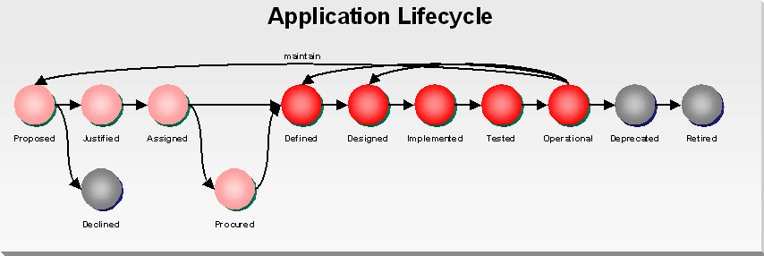
The statuses have the following meaning:
The following are the recommended properties that should be captured for applications:
Property |
Description |
|---|---|
Name (*) |
The unique name of the application. |
Version (*) |
The version number of the application. |
Goal (*) |
A brief description of the business purpose of the application. |
Description |
The description gives a brief overview of the core functionality of the application and should add to the goal. |
Business Category |
Select the folder path the application belongs to with respect to the business taxonomy (see Gather Common Taxonomies). |
Scope |
The scope of an application defines the relevant area within the enterprise for which the application is applicable. Valid values include:
|
Key Functional Areas |
This lists the key functional areas that are supported by the application and should refer to the business functions as have been identified in the Functional Model. |
Status |
The current status of the application according to the lifecycle as defined in the Application Lifecycle above. The set of available statuses can be customized for a particular enterprise. |
Policy Compliance |
Indicates if the application is compliant to all associated policies. Valid values include:
|
Date of Compliancy Check |
Indicates the last date the policy compliancy was checked for the application. |
Compliancy Report |
Concerns the link or URL to the policy compliancy report |
Major Technologies |
A listing of the major technologies that will be or have been used to create the application. Examples are SOA, J2EE, .NET, Java, XML, EJB, Toplink, Hybernate, Oracle Database, etc. |
Systems on which it Depends (name and nature) |
A listing of the names and nature (e.g., Windows, Unix, AS/400, etc.) of the IT systems / platform on which the application depends or runs. |
Total Costs (initial, average last 5 years, current year, planned for next year) |
This provides an estimate of the costs of the application, and should be captured in a way that it provides sufficient information to support decisions about investment opportunities in an IT Portfolio. |
Average Cost / User |
This provides an estimate of the average costs per user of the application, and should be captured in a way that it provides sufficient information to support decisions about investment opportunities in an IT Portfolio. |
Planned Release Date |
The date on which the version of the application is planned to be released. |
Release Date |
The date on which the version of the application has been released. |
Expected End of Life |
This is date on which the application is planned to be at the end of its lifecycle or on which it has been decommissioned. |
Further Information |
Provides a list of links or URLs to additional information about the application. |
(*) Indicates mandatory properties. Other properties may become mandatory depending on the status.
Asset Type |
Relationship |
Description |
|---|---|---|
Stakeholder |
has a Business Sponsor |
An application has a business sponsor. |
Stakeholder |
owned by |
An application is owned by a stakeholder. |
Stakeholder |
checked by |
An application needs to be compliance-checked by a stakeholder. |
Interface |
provided by |
Functionality of a application can be provided by an interface. |
Implementation |
provided by |
An application is provided by an implementation. |
Software Package |
packaged into |
An application can be packaged into multiple software packages. |
Services |
accessed by |
The application is accessed by one or more services using one of its APIs (other than the services the application provides). |
Policy |
complies with |
The application was proved to be compliant with one or more policies. |
Usage Agreement |
consumes |
An application consumes services compliant with the usage agreement. |
Application |
next version of |
The application is the next version of an application. |
Application |
previous version of |
The application is the previous version of an application. |
Model |
is modeled by |
An application is modeled by one or more models. |
Project |
is realized by |
An application is realized by a project. |
Project |
maintained by |
An application is maintained by means of one or more projects. |
Test Plan |
tested by |
An application is tested by executing a test plan. |
A system describes a runtime environment for applications or services. A system consists of a single or multiple homogenous pieces of hardware providing the same set of software. A system provides the basic runtime capabilities needed to deploy and run an application or services. In the context of SOA, the system is used along the service lifecycle. Refer to the SOA Service Lifecycle technique, Define the Service Lifecycle, for more details on the use of systems.
The following describes the meta data description for systems.
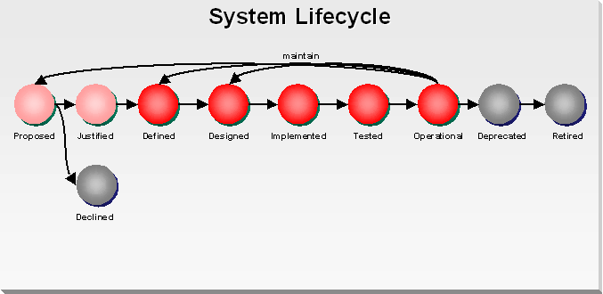
The statuses have the following meaning:
The following are the recommended properties that should be captured for systems:
Property |
Description |
|---|---|
Name (*) |
The unique name of the system. |
Version (*) |
Version number |
Goal (*) |
A brief description of the architectural purpose of the system. |
Description |
Provide a high-level description on the system setup, including basic information such as, HW type, OS, clustering technology, etc. |
Status (*) |
The current status of the system according to the lifecycle as defined in the System Lifecycle above. The set of available statuses can be customized for a particular enterprise. |
Type |
The type of platform provided by the system, for example:
|
Environment |
The environment for which the system is intended, for example:
|
Scope |
The scope of a system defines the relevant area within the enterprise for which the system is accessible. Valid values include:
|
Configuration |
Provide details on the configuration of the system including all software packages and versions. If there is a detailed documentation or model of the configuration, provide the corresponding URL. |
Sizing |
Provide details on the sizing of the system regarding number of processors, speed, RAM, HD type and capacity, etc. If there is any document or model with details, provide the corresponding URL. |
Monitor |
Define the technology available to monitor the system. If the technology allows to realize specific monitors, e.g., for applications or services hosted on the platform, provide a link to the documentation, explaining the possibilities and configuration. |
Availability |
Provide information on the general availability of the system. Provide details on the planning of times, the system will be unavailable. For example, a system may be unavailable for maintenance every first Saturday of the month or will be restarted every night at 00:00 AM. |
Maintenance |
Provide information on the maintenance cycles and processes. Define the expected timeline for updates of the system and how this will impact hosted applications and systems. For example, security patches will be installed automatically in every next maintenance window. Whereas, major release changes will be planned in cooperation with all hosted applications and services. |
Scalability |
Provide information on the scalability of the system. |
Total Costs (initial, average last 5 years, current year, planned for next year) |
This provides an estimate of the costs of the system, and should be captured in a way that provides sufficient information to support decisions about investment opportunities in an IT Portfolio. |
Average Cost / User |
This provides an estimate of the average costs per user, i.e., application or service, and should be captured in a way that it provides sufficient information to support decisions about investment opportunities in an IT Portfolio. |
Planned Release Date |
The date on which the version of the system is planned to be released. |
Release Date |
The date on which the version of the system has been released. |
Expected End of Life |
This is date on which the system is planned to be at the end of its lifecycle or on which it has been decommissioned. |
Further Information |
Provides a list of links or URLs to additional information about the system. |
(*) Indicates mandatory properties. Other properties may become mandatory depending on the status.
Asset Type |
Relationship |
Description |
|---|---|---|
Stakeholder |
owned by |
A system is owned by a stakeholder. |
Stakeholder |
supported by |
An system is supported by a stakeholder. |
Software Package |
deploys |
A system can deploy multiple software packages. |
Policy |
defines |
A system can define one or more policies that must be complied with by the software to be deployed on the system. |
Requirements |
fulfills |
A system can fulfill multiple requirements. |
System |
next version of |
The system is the next version of a system. |
System |
previous version of |
The system is the previous version of a system. |
Test Plan |
tested by |
A system is tested by executing a test plan. |
The requirement asset type is a container for a specific requirement. A requirement can be expressed by the business in the scope of a project or by operations reflecting special needs for specific systems.
If a requirement links to a reusable component or in the context of SOA, to a service, the requirement should be generalized to enable sharing outside of the project scope. In the context of SOA, the requirement will be created and used along the service lifecycle. Refer to the SOA Service Lifecycle technique, Define the Service Lifecycle, for more details on the use of requirements.
The following describes the meta data description for requirements that are the source for the various models and supplemental requirements that capture them. For example, some enterprises will capture requirements in the format of “the system shall …”, or the “user must be able to …”. These requirements normally are captured in business process models, use case models, domain models, and a list of supplemental requirements.
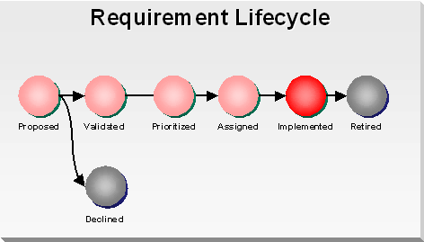
The statuses have the following meaning:
The following are the recommended properties that should be captured for requirements:
Property |
Description |
|---|---|
Id (*) |
The unique id of the requirement. |
Description (*) |
Brief description of the requirement. |
Business Category |
Select the folder path this asset should belong to with respect to the business taxonomy (see Gather Common Taxonomies). |
Version (*) |
Version number |
Type |
The type for the requirement, for example:
|
Scope |
The scope of a requirement defines the relevant area within the enterprise for which the requirement is applicable. Select the scope of the requirement based on Enterprise Architecture taxonomy for scope, e.g.,
|
Status (*) |
The status of the requirement according to the lifecycle that has been defined in the Requirement Lifecycle above. |
Shared |
Indicates if the requirement is shared:
|
Requirement |
Either captures the text of the requirement directly, or links to the requirement in an appendix or an external URL that allows loading the requirement from its source. |
Enterprise Priority Score |
The enterprise priority score indicates the priority for the requirement measured at the enterprise level. A higher score value indicates a lower enterprise priority (for example, priority 1 is the highest). |
Priority Justification |
This field is used to enter brief notes on how the Enterprise Priority Score was determined for the requirement. |
Priority Score Date |
Provide the date the score was last updated. |
Priority Score Contact |
Provide the contact details of the person responsible for the scoring of the requirement. |
Validation Date |
Date when the policy was reviewed and validated. |
Further Information |
Provide a list of links or URLs to any type of additional information you want to provide for this requirement. |
(*) Indicates mandatory properties. Other properties may become mandatory depending on the status.
Asset Type |
Relationship |
Description |
|---|---|---|
Stakeholder |
owned by |
A requirement is owned by a stakeholder, for example, the business analyst that specified it. |
Stakeholder |
scored by |
A requirement needs to be scored regarding its priority by a stakeholder. |
Stakeholder |
validated by |
A requirement needs to be validated by a stakeholder. |
Project |
defined by |
The requirement may be captured in the scope of a specific project. Only applicable for requirements of type “Project specific”. |
System |
has a defined by Sponsor |
The requirement may be captured in the scope of a specific system (in the infrastructure). Only applicable for requirements of type “System specific”. |
Application |
defined by |
The requirement may be captured in the scope of a specific application. Only applicable for requirements of type “Application specific”. |
Model |
captured in |
The requirement is captured in one or more models. |
Service |
realized by |
The requirement is realized by one or more services. Only to be used in case the realization is not already explicit by means of the model with which it is associated. |
Application |
realized by |
The requirement is realized by one or more applications. |
System |
realized by |
The requirement is realized by one or more systems (in the infrastructure). |
Requirement |
next version of |
The requirement is a next version of the associated requirement. |
The use case asset type supports managing use cases and their relationships.
The following are the recommended properties that should be captured for use cases:
Property |
Description |
|---|---|
ID (*) |
The unique ID of the use case. |
Name (*) |
The name of the use case. |
Type |
One of "business use case," or "system use case." |
Scope |
One of TBD. |
Status |
One of "identified," "captured," or "analyzed." |
(*) Indicates mandatory properties. Other properties may become mandatory depending on the status.
Asset Type |
Relationship |
Description |
|---|---|---|
Iteration |
realized in |
A use case is realized in an iteration. |
Stakeholder |
has |
A use case has one or more stakeholders. |
Requirement |
captures |
A use case captures one or more functional requirements. |
The model asset type allows managing relationships to models. Depending on the Enterprise Repository, the model may be managed as an attachment to the asset itself or by providing a URL to the model in another repository, e.g., a Source Control System.
In the context of SOA, the model will be created and used along the service lifecycle. Refer to the SOA Service Lifecycle technique, Define the Service Lifecycle, for more details on the use of models.
The following describes the meta data description for models such as the Use Case Model, the Function Model, the Domain Model, and other types of models that are used in the enterprise.
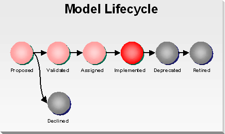
The statuses have the following meaning:
The following are the recommended properties that should be captured for models:
Property |
Description |
|---|---|
Name (*) |
The unique name of the model. |
Type |
The type of the model, for example:
|
Description |
Description of the architectural elements in the model. |
Level of Detail |
The valid values for this data element (at least initially) should follow the same values as the stakeholder "level of detail" data element:
|
Model Notation |
Notation used in the mode. The notation can be a standard notation, such as, UML or BPMN, or conform to an internal notation standard to cover basic selection of symbol, font color, text, graph, etc., used to represent certain concepts, for example, services with ovals, components with Times Roman, processes in blue, list the actors in a textual table, plot the quantitative analysis results as a bar graph, etc. If the notation is documented somewhere else, include a link to that document. Otherwise, provide a short description / legend of the notation used allowing the stakeholders interested in the model to understand the model. |
Language |
Any specific language that the model conforms to, e.g., UML and OCL. Sometimes, no language may exist. in these instances, document an associated semantic/glossary to utilize. |
Modeling / Analysis Techniques |
The language, modeling techniques, patterns or analytical methods used in “constructing” and “validating” the model. |
Presentation Techniques |
Detail any specific presentation techniques used, i.e., layout guidelines such as, it is important to have actors in the center of the model while customers are at the top. |
Scope |
The scope of a model defines the relevant area within the enterprise for which the model is applicable. Select the scope of the model based on Enterprise Architecture taxonomy for scope, for example:
|
Business Category |
Select the folder path this asset should belong to with respect to the business taxonomy (see Gather Common Taxonomies). |
Version (*) |
Version number |
Status (*) |
The status of the model according to the lifecycle that has been defined in the Model Lifecycle above. |
Shared |
Indicates if the model is shared, for example:
|
Original |
Link to the original model in such a way that it allows loading the model from its original source (for example, some existing other repository, modeling tool, content management system, version control system, etc.). |
Tool |
Specifies the tool, including the version, that was used to create the model. |
Validation Date |
Date when the model was reviewed and validated. |
Further Information |
Provide a list of links or URLs to any type of additional information you want to provide for this model. |
(*) Indicates mandatory properties. Other properties may become mandatory depending on the status.
Asset Type |
Relationship |
Description |
|---|---|---|
Stakeholder |
owned by |
A model is owned by a stakeholder responsible to maintain the model. |
Stakeholder |
validated by |
A model needs to be validated by a stakeholder. |
Service |
defines |
The model defines one or more services. |
Service |
uses |
The model uses one or more services. |
Entity |
defines |
The model defines one or more entities. |
Entity |
uses |
The model uses one or more entities (not the Domain Model defining the entity). |
Business Process |
uses |
The model uses one or more (sub) business process models (in the case of Function Model or Process Model). |
Use Case |
includes |
The model includes one or more use cases (in the case of Business or System Use Case Model). |
Requirement |
captures |
The model captures one or more requirements. |
Model |
details |
The model provides a next-level of detail to the related model. |
Model |
next version of |
The model has a next version. |
Application |
models |
The model models (part) of one or more applications. |
Project |
create by |
The model is created by a project. |
Project |
used by |
The model is used or changed by one or more projects. |
View |
associated with |
The model is associated with one or more views. |
The policy asset type specifies a governance policy. A policy provides guidelines and best practices to be followed. In order to signify the policy, the key words "MUST," "MUST NOT," "REQUIRED," "SHALL," "SHALL NOT," "SHOULD," "SHOULD NOT," "RECOMMENDED," "MAY," and "OPTIONAL" should be used in the policy description.
In the context of SOA, the policy is created and used along the service lifecycle. Refer to the SOA Service Lifecycle technique, Define the Service Lifecycle, for more details on the use of policies.
The following describes the meta data description for governance policies.
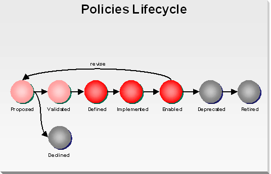
The statuses have the following meaning:
The following are the recommended properties that should be captured for governance policies:
Property |
Description |
|---|---|
Name (*) |
The unique name of the policy. |
Description |
Description on what the policy is intended to achieve. |
Business Category |
Select the folder path this asset should belong to with respect to the business taxonomy (see Gather Common Taxonomies). |
Version (*) |
The version number of the policy. |
Type |
The type for the policy, for example:
|
Scope |
The scope of a policy defines the relevant area within the enterprise for which the policy is applicable. Select the scope of the policy based on Enterprise Architecture taxonomy for scope, for example:
|
Layer |
For architectural policies, the layer of a policy defines the relevant layer in the SOA Reference Architecture to which the policy is applicable. Select the layer of the policy according to the ones identified in that SOA Reference Architecture, or indicate as non-applicable. |
Status (*) |
The status of the policy according to the lifecycle that has been defined in the Policy Lifecycle above. |
Policy |
Provide a full text of the policy or link to an external document providing a detailed description of the policy. |
Compliance Check Role |
Provide information which role should execute a compliance check against this policy. |
Compliance Check Type |
The type of compliance check, for example:
|
Compliance Check Process |
For manual compliance check, provide a description on how to proof compliance with the policy. For automated compliance check, provide a description on the automation and a link to the implementation. |
Validation Date |
Date when the policy was reviewed and validated. |
Further Information |
Provide a list of links or URLs to any type of additional information about the policy. |
(*) Indicates mandatory properties. Other properties may become mandatory depending on the status.
Asset Type |
Relationship |
Description |
|---|---|---|
Stakeholder |
owned by |
A policy is owned by a stakeholder responsible to maintain the policy. |
Stakeholder |
validated by |
A policy needs to be validated by a stakeholder. |
Application |
applies to |
The policy applies to one or more applications. For example, in the case of SOA, this is used to assign consumer migration policies to a service consuming application. |
Service |
applies to |
The policy applies to one or more services. Some policies may be assigned to services automatically, for example architectural policies can be assigned depending on the classification against scope and layer. Others policies may need to be assigned explicitly, for example if a service consumes other services, a consumer migration policy may need to be assigned. |
Project |
defined by |
The policy is defined by a project. Used in case the policy is defined by and only relevant to that project, and only applies to policies of the type Project Policy. |
System |
defined by |
The policy has been defined in the context of one or more systems. Only applicable in case of the type System Policy. |
Policy |
has as next version by |
The policy has a next version. |
The entity asset type provides information about a data entity applicable to the enterprise. Each entity in an enterprise business model will be represented by an entity asset.
In the context of SOA, the entity is created and used along the service lifecycle. Refer to the SOA Service Lifecycle technique, Define the Service Lifecycle, for more details on the use of entities.
The following describes the meta data description for entities that should have an enterprise-level visibility, and therefore, should be defined in the enterprise in one place.
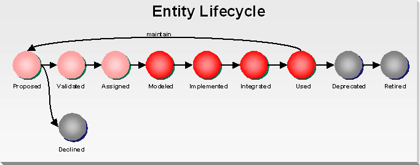
The statuses have the following meaning:
The following are the recommended properties that should be captured for entities:
Property |
Description |
|---|---|
Name (*) |
The unique name of the entity. |
Description |
A short description of the entity. |
Definition |
The definition of the entity. You may use XSD files to define entities. |
Transformations |
Provide transformation details to the previous version of the entity or to a corresponding entity of a different data domain. You may use XSLT files to document transformations. |
Enterprise Data Category |
Select the folder path the entity belongs to with respect to the enterprise data taxonomy identified on enterprise data modeling. |
Version (*) |
Version number |
Status (*) |
The status of the entity according to the lifecycle that has been defined in the Entity Lifecycle above. |
Validation Date |
Date when the entity was reviewed and validated. |
Further Information |
Provide a list of links or URLs to any type of additional information about the entity. |
(*) Indicates mandatory properties. Other properties may become mandatory depending on the status.
Asset Type |
Relationship |
Description |
|---|---|---|
Stakeholder |
owned by |
The entity is owned by a stakeholder responsible to maintain the entity and ensure overall consistency. |
Stakeholder |
validated by |
A entity needs to be validated by a stakeholder. |
Service |
defines |
An entity can define multiple services. |
Interface |
used by |
The entity is used by the interface. |
Model |
defines |
The entity is modeled by the Domain Model. |
Model |
used by |
The entity is used by the model (not being the Domain Model in which it is included). |
Business Function |
owned by |
The entity is owned by the business function (when applicable). |
The service asset controls all information on a service and its dependencies across the enterprise. Refer to the SOA Service Lifecycle technique, Define the Service Lifecycle, for more details on services.
The following describes the meta data description for services.
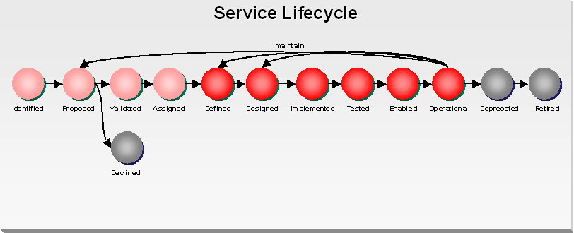
The statuses have the following meaning:
The following are the recommended properties that should be captured for services:
Property |
Description |
|---|---|
Name (*) |
The unique name of the service. |
ID (*) |
A unique ID of the service with no meaning by itself, for ease of reference. |
Business Category |
Select the folder path this asset should belong to with respect to the business taxonomy (see Gather Common Taxonomies). |
Version (*) |
Version number |
Type |
Select the architectural layer to which the service belongs with respect to the service layer taxonomy as explained in the Service Architecture technique:
|
Scope |
The scope of a requirement defines the relevant area within the enterprise for which the requirement is applicable. Select the scope of the requirement based on the Enterprise Architecture taxonomy for scope taxonomy as explained in the Service Architecture technique:
|
Status (*) |
The status of the service according to the lifecycle that has been defined in the SOA Service Lifecycle above. |
Boundaries |
Provide information on the detailed boundary of the service. This information needs to be available as soon as the service has reached the defined status. |
Migrations Strategy |
If the asset describes a new version of an already existing service, provide information on the migration strategy for consumers of previous versions of the service. |
Planned Defined Date |
The date on which the service version is planned to be defined and the contract is to be available. |
Defined Date |
The date on which the service version has reached the defined state. |
Planned Designed Date |
The date on which the service version is planned to be defined and the interface is to be available. |
Designed Date |
The date on which the service version has reached the designed state. |
Planned Tested Date |
The date on which the service version is planned to be tested. |
Tested Date |
The date on which the service version has reached the tested state. |
Planned Enabled Date |
The date on which the service version is planned to be enabled. |
Enabled Date |
The date on which the service version has reached the enabled state. |
Planned Operational Date |
The date on which the service version is planned to be operational. |
Operational Date |
The date on which the service version has reached the operational state. |
Planned Retired Date |
The date on which the service version is planned to be retired. As soon as a service reaches deprecated state, the date planned for retirement has to be provided. |
Retired Date |
The date on which the service version has been retired. |
Policy Compliance |
Indicated if the service is compliant to all associated policies. Valid values include:
|
Date of Compliancy Check |
Indicates the last date the policy compliancy was checked for the service. |
Compliancy Report |
Concerns the link or URL to the policy compliancy was checked for the service. |
Scope Benefit Score |
The scope score weighs the benefit that the intended scope of the service candidate will have on the enterprise if realized. A higher score value indicates positively towards justification. Proposed values include:
|
Reuse Benefit Score |
The reuse score weighs the potential reuse levels for the service candidate if realized. A higher score value indicates positively towards justification. Proposed values include:
|
Agility Benefit Score |
The agility score weighs the potential for enterprise agility resulting from the service candidate if realized. A higher score value indicates positively towards justification. Proposed values include:
|
Compliance Benefit Score |
The compliance score weighs the potential for enterprise compliance resulting from the service candidate if realized. A higher score value indicates positively towards justification. Proposed values include:
|
Enablement Benefit Score |
The enablement score weighs the potential to leverage existing enterprise assets to realize the functions of the proposed service candidate. A higher score value indicates positively towards justification. Proposed values include:
|
Skill Set Impact Risk Score |
The skill-set impact score weighs the additional skill-set necessary to realize the functions proposed by the service candidate in a shared manner. A higher score value indicates negatively towards justification. Proposed values include:
|
Toolset Capability Risk Score |
The toolset capability score weighs the additional tools or technology necessary to realize the functions proposed by the service candidate in a shared manner. A higher score value indicates negatively towards justification. Proposed values include:
|
Project Impact Risk Score |
The project impact score weighs the additional impact placed on the proposed, in-flight, and operational projects that would be incurred by realizing the service candidate in a shared environment. A higher score value indicates negatively towards justification. Proposed values include:
|
QoS Feasibility Risk Score |
The QOS feasibility score weighs the level of difficulty and risk that will be encountered when trying to realize the functional and supplemental demands of the service candidate within a shared environment. A higher score value indicates negatively towards justification. Proposed values include:
|
Proposed Count |
This value represents the number of times this service has been proposed unsuccessfully for validation. The higher this value becomes, the more pressure it should lend towards validation. |
Enterprise Priority Score |
The enterprise priority score indicates the priority for the service measured at the enterprise level. A higher score value indicates a lower enterprise priority (e.g., Priority 1 is the highest). |
Priority Justification |
This field is used to enter brief notes on how the Enterprise Priority Score was determined for the service. |
Priority Score Date |
Date when the service has been last scored. |
Total Costs (initial, average last 5 years, current year, planned for next year) |
This provides an estimate of the costs of the service, and should be captured in a way that it provides sufficient information to support decisions about investment opportunities in an IT Portfolio. |
Average Cost / Consumer |
This provides an estimate of the average costs per consumer of the service, and should be captured in a way that it provides sufficient information to support decisions about investment opportunities in an IT Portfolio. |
Validation Date |
Date when the service was reviewed and validated. |
Further Information |
Provide a list of links or URLs to any type of additional information about the service. |
(*) Indicates mandatory properties. Other properties may become mandatory depending on the status.
Asset Type |
Relationship |
Description |
|---|---|---|
Stakeholder |
has business sponsor |
A service has a business sponsor. |
Stakeholder |
owned by |
A service is owned by a stakeholder. |
Stakeholder |
checked by |
A service needs to be compliance checked by a stakeholder. |
Stakeholder |
prioritized by |
A service needs to be prioritized by a stakeholder. |
Stakeholder |
validated by |
A service needs to be validated by a stakeholder. |
Application |
accesses |
The service accesses an application using one of its API’s (other than the services the application provides) |
Policy |
complies to |
The service was proved to be compliant with one or more policies. |
Usage Agreement |
consumes |
A service consumes services compliant with the usage agreement. |
Service |
next version of |
The service is the next version of a service. |
Service |
previous version of |
The service is the previous version of a service. |
Model |
is identified by |
A service is identified by one or more models. |
Requirement |
fulfills |
A service fulfills one or more requirements. |
Entity |
is identified by |
A service is identified by an entity and therefore represents the entity as a data service. |
Project |
is created by |
A service is created by a project. |
Project |
is updated by |
A service is updated by a project. |
Project |
is used by |
A service is used by one or more projects. |
Service Contract |
defines |
A service defines a service contract. |
Interface |
provided by |
A service is provided by an interface. |
Implementation |
provided by |
A service is provided by an implementation. |
Software Package |
packaged into |
A service is packaged into a software package for deployment. |
Test Plan |
tested by |
A service is tested by executing a service test plan. |
The service contract asset defines the service. It provides the concise definition of what function(s) the service performs, the operating constraints of the service (such as QoS requirements), security requirements, as well as any service enablement requirements, such as SLA enforcement, exception handling, logging, etc. The service contract is created and used along the service lifecycle. Refer to the SOA Service Lifecycle technique, Define the Service Lifecycle, for more details on the use of service contracts.
The following describes the meta data description for service contracts.
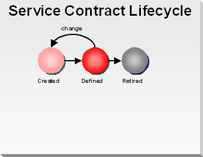
The statuses have the following meaning:
The following are the recommended properties that should be captured for service contracts:
Property |
Description |
|---|---|
Name (*) |
The unique name of the service to which the contract refers. |
ID |
A unique ID for the service contract with no meaning by itself, for ease of reference. |
Version (*) |
Version number |
Status (*) |
The status of the service according to the lifecycle that has been defined in the Service Contract Lifecycle above. |
Description |
A conceptual description providing the following:
|
Complexity |
An indication of the complexity of the service that can be used for bottom-up estimation (instead of or to validate the top-down estimation). |
Usage Terms |
Describes any usage restriction for the service as well as conditions for use (e.g., funding). For instance, this field may specify that the service may only be utilized by consumers from a particular LOB between 7PM and 5AM. |
Current Version |
The current version indicates the highest level version of the service that is currently deployed. |
Revision History |
The revision history captures any changes made to this service revision. |
Release Frequency |
Release frequency indicates the frequency for which changes to the service are typically made. |
Versioning Strategy |
The versioning strategy indicates the versioning technique and strategy that will be used by the service. |
Deprecation Strategy |
The deprecation strategy describes the way in which past versions of the service will be deprecated. |
Message Exchange Pattern |
Interactions describe the expected method that consumers will communicate with the service. The following are common Message Exchange Patterns (MEPs) that may be used to describe the interaction type between service and consumer:
Other message exchange patterns may be identified specifically for the enterprise. The interaction patterns available will likely be influenced by the runtime environment in which the services execute. For example, OSB and SOA suite support a whole host of interaction patterns while other environments may only support Request Response. |
Request Message |
Functional description of the data provided by the consumer to the service during the request (applicable to request-response, fire-and-forget, notification type of message exchange patterns). |
Response Message |
Functional description of the data provided by the service to the consumer as a response to a request (applicable to request-response, publish/subscribe type of message exchange patterns). |
Compensation |
A logical description of the support (if any) of compensating transactions. Compensation occurs when a process cannot complete several operations after completing others. The process must return and undo the previously completed operations. For example, assume a process is designed to book a rental car, a hotel, and a flight. The process books the car and the hotel, but cannot book a flight for the correct day. In this case, the process performs compensation by un-booking the car and the hotel. |
Idempotent |
Indicates if the service is idempotent. The specification of a service as being Idempotent may be the means for achieving high-level compensating transaction support. An idempotent service is a service that can be called multiple times without changing the result. For example, an updateSocialSecurityNumber operation would be idempotent if you can call it multiple times with the same input (e.g., person, SSN) and the result is the same each time – it sets the person’s social security number to the SSN provided. |
Reliability |
The level of reliability required by the service regarding incoming messages from consumers (e.g., guaranteed delivery, once-and-only-once, etc). |
Availability |
Provides the minimal up-time required by the service. This value may be separated by varying properties, such as time of day, day of week/month, etc. |
Concurrency |
The expected effect of concurrency on the service and how concurrency is handled (e.g., optimistic locking). |
Latency |
The maximum amount of latency acceptable for the service. This value may be broken down by functional operations. |
Request Volume |
The maximum request volume sustainable before invalidating the QoS requirements. |
Maximum Message Size |
Indicates the maximum size for incoming and outgoing messages. |
Security |
Defines the security policies that are required to be enforced for the service. Includes but is not limited to: Authentication, Authorization, message level security, transport security, etc. |
SLA Monitoring / Enforcement |
Describes the SLA monitors and active enforcements the service provides. |
Exception Management |
Describes the automatic actions taken when a particular SLA failure or exception condition occurs. |
Management |
Describes how the service is managed in production. |
Logging |
Describes the logs and messages created by the service. |
Further Information |
Provide a list of links or URLs to any type of additional information about the service contract. |
(*) Indicates mandatory properties. Other properties may become mandatory depending on the status.
Asset Type |
Relationship |
Description |
|---|---|---|
Service |
defined by |
The contract is defined by the service. |
Contract |
next version of |
The contract is the next version of a contract. |
Contract |
previous version of |
The contract is the previous version of a contract. |
Usage Agreement |
agrees |
The contract can agree to many usage agreements. |
Test Case |
tested by |
The contract can be tested by many test cases. |
The service or application interface asset describes the interface of a service or application. The more consumers an interface has, the more stability in the interface is needed. The interface is created and used along the service lifecycle. Refer to the SOA Service Lifecycle technique, Define the Service Lifecycle, for more details on the use of service interfaces.
The following describes the meta data description for interfaces.
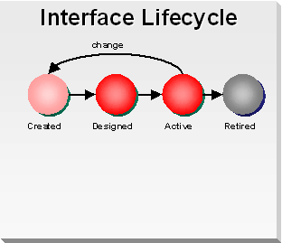
The statuses have the following meaning:
The following are the recommended properties that should be captured for interfaces:
Property |
Description |
|---|---|
Name (*) |
The unique name of the interface. |
Version (*) |
Version number |
Status (*) |
The status of the interface according to the lifecycle that has been defined in the Interface Lifecycle above. |
Provider |
Select the type of the software providing the interface, for example:
|
Style |
The style represents the feel for the interface, and provides a generalization around how the consumer will interact with the interface provider:
|
Protocol |
Select a protocol from the list of protocols as defined in the reference architecture, for example:
|
Transport |
Select a transport from the list of transports as defined in the reference architecture, for example:
|
Assumptions |
Any assumptions that may need to be validated by the enterprise architecture team and/or the business. |
Expected Usage |
Describe how identified and possible future consumers are expected to use the interface. |
Trade-Offs |
Any interface considerations that resulted in a trade-off between consumer and provider. |
QoS Considerations |
Decisions made that affected the interface for the purpose of improving or enabling QoS requirements. |
Risks |
Any outstanding risks that could be realized as a result of realizing the interface in the designed way. Include likelihood, severity and any potential mitigation plans. |
Message Exchange Patterns |
Describe the pattern that consumers will use to operate with the interface (e.g., request/response, fire and forget, pub/sub, etc.). |
Reasoning |
Reasoning behind the choices for: Interface Style, Protocol and Transport. |
Operations |
Provide the following for each operation defined within the interface:
|
Traceability Matrix |
This section depicts where each requirement is met as well as which requirement drove a particular operation. A single requirement may influence multiple operations. |
Implementation |
Provide a link to the implementation of the interface. Create WSDL files for each interface, regardless if the interface belongs to a web service or not. |
Further Information |
Provide a list of links or URLs to any type of additional information about the service interface. |
(*) Indicates mandatory properties. Other properties may become mandatory depending on the status.
Asset Type |
Relationship |
Description |
|---|---|---|
Service |
defined by |
The interface can be defined by several services. |
Interface |
next version of |
The interface is the next version of an interface. |
Interface |
previous version of |
The interface is the previous version of an interface. |
Test Case |
tested by |
The interface can be tested by many test cases. |
The interface asset describes the implementation of a functionality. The implementation can be of any technology or style, and can deliver and application or service. For SOA, the implementation is created and used along the service lifecycle. Refer to the SOA Service Lifecycle technique, Define the Service Lifecycle, for more details on the use of implementation.
The following describes the meta data description for implementations.
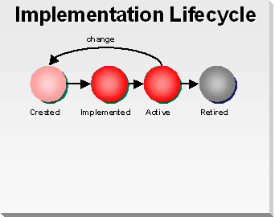
The statuses have the following meaning:
The following are the recommended properties that should be captured for implementations:
Property |
Description |
|---|---|
Name (*) |
The unique name of the implementation. |
Version (*) |
Version number |
Status (*) |
The status of the implementation according to the lifecycle that has been defined in the Implementation Lifecycle above. |
Type |
The type of the implementation, for example:
|
Major Technologies |
A listing of the major technologies that will be or have been used to create the implementation. Examples are SOA, J2EE, .NET, Java, XML, EJB, Toplink, Hybernate, Oracle Database, etc. |
Systems on which it Depends (name and nature) |
A listing of the names and nature (e.g., Windows, Unix, AS/400, etc.) of the IT systems / platform on which the application depends or runs. |
Development Platform |
Provide details on the development platform that needs to be available to maintain the service. |
Development Environment |
Provide the URL or location description of the development environment available. |
Test Environment |
Provide the URL or location description of the test environment to which the service is deployed. |
Sources and Documentation |
Provide the URL to the sources and the documentation of the implementation. All this information should be available in a change management system. |
Build Considerations |
Describe any considerations applicable to building the implementation. |
Further Information |
Provide a list of links or URLs to any type of additional information about the implementation. |
(*) Indicates mandatory properties. Other properties may become mandatory depending on the status.
Asset Type |
Relationship |
Description |
|---|---|---|
Stakeholder |
owned by |
The implementation is owned by a stakeholder responsible for realizing and maintaining the implementation. |
Service |
defined by |
The implementation can be defined by several services. |
Implementation |
next version of |
The implementation is the next version of an implementation. |
Implementation |
previous version of |
The implementation is the previous version of an implementation. |
Test Case |
tested by |
The implementation can be tested by many test cases. |
Each time a consumer plans to use a service, a service usage agreement must be provided and agreed upon by both the consumer and the service provider. The service usage agreement asset documents this agreement. The service usage agreement asset may change over time due to dynamic markets, but each time the agreement must be covered by both sides. The following describes the meta data description for service usage agreements. The service usage agreement is created and used along the service lifecycle. Refer to the SOA Service Lifecycle technique, Define the Service Lifecycle, for more details on the use of service usage agreements.
The following describes the meta data description for service usage agreements.
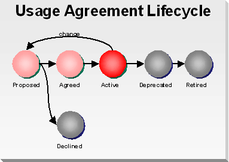
The statuses have the following meaning:
The following are the recommended properties that should be captured for service usage agreements:
Property |
Description |
|---|---|
Name (*) |
The unique name of the usage agreement. |
Name of the Consumer (*) |
If the consumer is a service it should be the name of the service. If the consumer is an application it should be the name of the component in the application. |
Version (*) |
Version number |
Status (*) |
The status of the usage agreement according to the lifecycle that has been defined in the Service Usage Agreement Lifecycle above. |
Consumer Type |
The type further defines the nature of the consumer, for example:
|
Description |
Provide a description of the context of usage. |
Maximum Load |
The maximum number of invocations the consumer will create in a given timescale, e.g., per hour or per minute. |
Maximum Response Time |
The maximum time the service is allowed to need executing the request during maximum load. |
Average Response Time |
The time the service is allowed to need executing the request on average. |
Expected Usage |
Provide details on the expected usage scenario including days of the week, hours, and average consumption during the indicated time periods. |
Peak Usage |
Provide details on the peak usage scenario including days of the week, hours, and average consumption during the indicated time periods. |
Further Information |
Provide a list of links or URLs to any type of additional information about the usage agreement. |
(*) Indicates mandatory properties. Other properties may become mandatory depending on the status.
Asset Type |
Relationship |
Description |
|---|---|---|
Service |
defined by |
The contract is defined by the service. |
Usage Agreement |
agrees |
The contract can agree to many usage agreements. |
Test Case |
tested by |
The contract can be tested by many test cases. |
The test scenario asset type defines a set of test cases to perform tests on an application, system or service. For SOA, the test scenarios are created and used along the service lifecycle. Refer to the SOA Service Lifecycle technique, Define the Service Lifecycle, for more details on the use of test plans in SOA.
The following describes the meta data description for test scenarios.
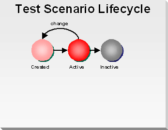
The statuses have the following meaning:
The following are the recommended properties that should be captured for test scenarios:
Property |
Description |
|---|---|
Name (*) |
The unique name of the test scenario. |
Description |
Description of what the test scenario is intended to test. |
Version (*) |
Version number |
Type |
The type for the test scenario, for example:
|
Nature |
The nature of the test scenario, for example:
|
Scenario |
The scenario that should be executed as described in the Service Testing technique for services, for example:
|
Status (*) |
The status of the usage agreement according to the lifecycle that has been defined in the Test Scenario Lifecycle above. |
Execution |
Describe how to execute the test scenario and the indicators to prove success. |
Test Results |
Provide a URL to the test results of the last test execution. |
Further Information |
Provide a list of links or URLs to any type of additional information about the test scenario. |
(*) Indicates mandatory properties. Other properties may become mandatory depending on the status.
Asset Type |
Relationship |
Description |
|---|---|---|
Stakeholder |
owned by |
A test scenario is owned by a stakeholder responsible to maintain the test scenario. |
System |
tests |
A test scenario can test a system. |
Application |
tests |
A test scenario can test multiple applications. |
Service |
tests |
A test scenario can test multiple services. |
Test Scenario |
next version of |
A test scenario is the next version of a test scenario. |
Test Scenario |
previous version of |
A test scenario is the previous version of a test scenario. |
Test Case |
executes |
A test scenario can execute multiple test cases. |
System |
runs on |
A test scenario runs on one or more systems. |
The test case asset type defines a single test case that can be executed. Test cases are typically executed as part of a test plan. However, not all testing is controlled by test plans, e.g., development testing may be included in the build process of development. For SOA, the test cases are created and used along the service lifecycle. Refer to the SOA Service Lifecycle technique, Define the Service Lifecycle, for more details on the use of test cases in SOA.
The following describes the meta data description for test cases.
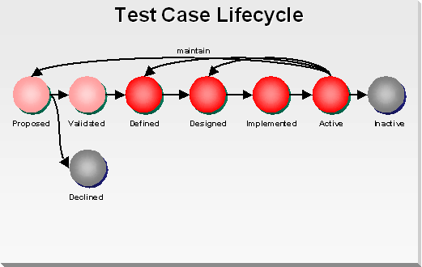
The statuses have the following meaning:
The following are the recommended properties that should be captured for test cases:
Property |
Description |
|---|---|
Name (*) |
The unique name of the test case. |
Description |
Description of what the test case is intended to test. |
Version (*) |
Version number |
Type |
The type for the test case as described in the Service Testing technique, for example:
|
Nature |
The nature of the test case, for example:
|
Status (*) |
The status of the usage agreement according to the lifecycle that has been defined in the Test Case Lifecycle above. |
Prerequisites |
Describe any prerequisites for the test, e.g., availability of data. |
Execution |
Describe how to execute the test case. On manual test cases, a step-by-step description needs to be included how to perform the test and how to validate the results. For automated test cases, a URL to the test case implementation should be included. |
Test Data |
Describe the data needed to execute the test. If the data is available in an automated test environment, define how to select the data for test execution. |
Test Results |
Provide a description on the expected test results and any variations to it. |
Further Information |
Provide a list of links or URLs to any type of additional information about the test case. |
(*) Indicates mandatory properties. Other properties may become mandatory depending on the status.
Asset Type |
Relationship |
Description |
|---|---|---|
Stakeholder |
owned by |
A test case is owned by a stakeholder responsible to maintain the test case. |
Requirement |
tests |
A test case can test multiple requirements of an application or system. |
Service Contract |
tests |
A test case can test a service by contract. |
Interface |
tests |
A test case can test an interface. |
Implementation |
tests |
A test case can test an implementation. |
Test Scenario |
used by |
A test case can be included as a step of a test scenario. |
Test Case |
next version of |
A test case is the next version of a test case. |
Test Case |
previous version of |
A test case is the previous version of a test case. |
Test Plan |
included in |
A test case can be included in multiple test plans. |
The software package asset type defines a package used to deploy software components onto a system. For SOA, the software package is created and used along the service lifecycle. Refer to the SOA Service Lifecycle technique, Define the Service Lifecycle, for more details on the use of software packages in SOA.
The following describes the meta data description for software packages.
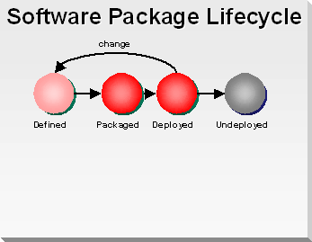
The statuses have the following meaning:
The following are the recommended properties that should be captured for software packages:
Property |
Description |
|---|---|
Name (*) |
The unique name of the software package. |
Description |
Description of the scope used to select software components to be included in the package. |
Version (*) |
Version number |
Type |
The type for the software package, for example:
|
Prerequisites |
Describe any prerequisites that need to be fulfilled by a system in order to deploy the package. |
Configuration |
Describe any configuration activities needed in order to deploy the package onto a specific system. |
Status (*) |
The status of the software package according to the lifecycle that has been defined in the Software Package Lifecycle above. |
Deployment |
Describe how to deploy the package. |
Further Information |
Provide a list of links or URLs to any type of additional information about the software package. |
(*) Indicates mandatory properties. Other properties may become mandatory depending on the status.
Asset Type |
Relationship |
Description |
|---|---|---|
Stakeholder |
owned by |
A software package is owned by a stakeholder. |
System |
deployed to |
A software package can be deployed to multiple systems. |
Application |
contains |
A software package contains some or all components of the application. |
Service |
contains |
A software package can contain multiple services. |
A stakeholder is a person, team or organization in a specific role. Stakeholders include not only IT, but also business and external providers. Example stakeholders include service engineer, project manager, enterprise architect, CIO, business analyst.
The following describes the meta data description for stakeholders that have been identified in the stakeholder analysis.
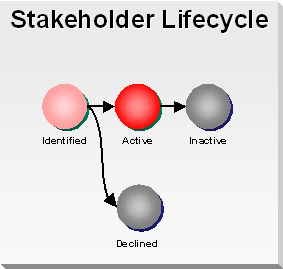
The statuses have the following meaning:
The following are the recommended properties that should be captured for stakeholders:
Property |
Description |
|---|---|
Name (*) |
The unique name of the stakeholder. May be a title, position or group name. |
Employee Name |
Name of the employee executing the role. The name of the employee may change due to changes in the project team. The same employee can represent different stakeholders in different projects. |
Role Name |
Select a role name from a list of roles. This may be a position, title or group name. |
Role Description |
Description of the individual role relative to the project within the defined domain. |
Stakeholder Type |
The type for the stakeholder, for example:
|
Status (*) |
The status of the stakeholder according to the lifecycle that has been defined in the Stakeholder Lifecycle above. |
Concern |
Describe the stakeholders interests in, or concerns relative to the project/system. Concerns are those interests which pertain to application / service development, its operation, or any other aspects that are critical or otherwise important to one or more stakeholders. This data element is garnered from the base concern acquired from domain analysis and expanded with individual concerns. |
Project Influence Score |
The project influence score weighs a stakeholder’s influence over a project. Influence refers to how powerful a stakeholder is in controlling what decisions are made, facilitate its implementation, or exert influence which affects the project positively or negatively. Proposed values include:·
|
Project Contribution Score |
The project contribution score weighs a stakeholder’s physical contribution to the success of the project. Proposed values include:
|
Assessment Score |
The stakeholder assessment score weighs the relative importance of the stakeholder in relation to the project. The stakeholder assessment score is calculated by multiplying the project contribution score with the project influence score. |
Priority Level |
By combining influence and importance metrics and using a grid diagram, stakeholders can be classified into different groups, which will help identify assumptions and the risks which need to be managed throughout the project lifecycle, for example:
|
Reporting Frequency |
Indicate how often the stakeholder reports regarding the project/system. Examples are weekly to the program manager, monthly to the projects steering committee. |
Required Information |
The kind of information each stakeholder wishes to receive. |
Preferred Delivery Channels |
For example, email, newsletter, etc. |
Information Usages |
Define the primary use of information by the stakeholder, for example:
|
Level of Detail |
Define the primary level of abstraction required, for example:
|
Validation Date |
Date when the stakeholder has been reviewed and validated. |
Validated By |
Contact details of the person responsible for the validation. |
Further Information |
Provide a list of links or URLs to any type of additional information about the stakeholder. |
(*) Indicates mandatory properties. Other properties may become mandatory depending on the status.
Asset Type |
Relationship |
Description |
|---|---|---|
Project |
member of |
A stakeholder represents a specific role in the scope of a project. |
View |
concerns addressed by |
The concerns of the stakeholder are addressed by the view. |
Views are representations of an overall architecture that are meaningful to one or more stakeholders. The architect chooses and/or develops a set of views that enable the architecture to be communicated to and understood by all the stakeholders, and enables them to verify that the system will address their concerns. Architects are interested in the architecture in its full scope and detail, but different stakeholders have different conceptions about the architecture and therefore require different views that focus on the concerns they deem relevant and leave out unnecessary information. Views define the set of models aimed at a particular type of stakeholder and addressing a particular set of concerns.
The following describes the meta data description for views that have been identified for the different stakeholders.
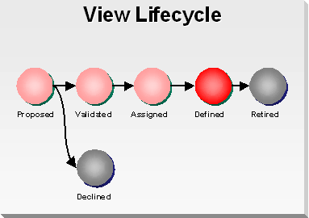
The statuses have the following meaning:
The following are the recommended properties that should be captured for views:
Property |
Description |
|---|---|
Name (*) |
The unique name of the view. |
Abstract |
High-level description of the view and its features and how the information will be used. |
Abstraction Level |
The classification of abstraction of the view, for example select one or many of:
|
Focus Level |
The classification of concern of the view, for example select one or many of:
|
Concerns / Needs |
Describe the concerns and needs addressed in the view. Concerns are the architectural issues which this view is capable of addressing. |
Rationale |
Include the rationale for the architectural elements selected. |
Version |
Version number |
Revision History |
Keep a log of the updates and changes to see the evolution and traceability of the viewpoint. |
Owner |
Details of the owning organization responsible for the overall view Integrity. |
Source |
Define the source (author, history, literature references) for this view. |
Status (*) |
The status of the stakeholder according to the lifecycle that has been defined in the View Lifecycle above. |
Profile Type |
Select a basic profile type:
|
Validation Date |
Date when the view has been reviewed and validated. |
Validated By |
Contact details of the person responsible for the validation. |
Further Information |
Provide a list of links or URLs to any type of additional information about the view. |
(*) Indicates mandatory properties. Other properties may become mandatory depending on the status.
Asset Type |
Relationship |
Description |
|---|---|---|
Stakeholder |
addresses |
The view addresses a concern for one or many stakeholders. |
View |
refinement |
Two views have a refinement relation, if they consider the same concerns at different levels of focus (that is, abstraction). In a refinement relationship between two views, the more concrete view is a refinement of the more abstract view. A refinement relation between two views implies that the more detailed view can be obtained from the less detailed view by adding design information. In addition, two views are consistent according to a refinement relation if, after removing the added design detail from the more detailed view, the more detailed view is equivalent to the less detailed view. |
View |
intersect |
Two views have an intersect relationship if they partly consider the same concern. |
View |
traceability |
Two views have a traceability relationship if they consider the same concerns at different level of focus. In a traceability relationship, the subordinate view can ascertain how, when, where, and why decisions have been made, etc. |
Model |
consists of |
A view consists of one or more models. |
This section is not yet available.
This section is not yet available.
There are no templates available to assist with this technique.
This technique is recommended for use in the following OUM tasks:
| Task | Usage |
|---|---|
| Use this technique to access information on the meta data descriptions for services and usage agreements. | |
| Use this technique to access information on the meta data descriptions for services and usage agreements. | |
| Use this technique to determine requirements regarding the tool selection of Enterprise Repository tooling. | |
| Use this technique to understand the components of the projects meta data for the Enterprise Repository. | |
| Use this technique to understand applications and the applications meta data for the Enterprise Repository. | |
| Use this technique to understand services and the services meta data for the Enterprise Repository. | |
| Use this technique to access information on the meta data descriptions for services and usage agreements. | |
| Use this technique to access information on the meta data descriptions for services definitions and service contracts. | |
| Use this technique to access information on the meta data descriptions for candidate services. | |
| Use this technique to access information on the meta data descriptions for services and usage agreements. | |
| Use this technique to understand what kind of elements are relevant for service design. | |
| Use this technique to understand what information can be stored in an Enterprise Repository regarding Software Packages. | |
| Use this technique to understand what information can be stored in an Enterprise Repository regarding Unit Test Scripts. | |
| Use this technique to understand what information can be stored in an Enterprise Repository regarding System Test Scenarios. | |
| Use this technique to understand what information can be stored in an Enterprise Repository regarding Integration Test Scenarios. |
Use the following criteria to check the quality of this technique:

Copyright © 2006, 2016, Oracle and/or its affiliates. All rights reserved.